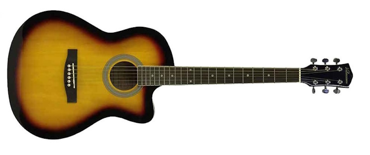
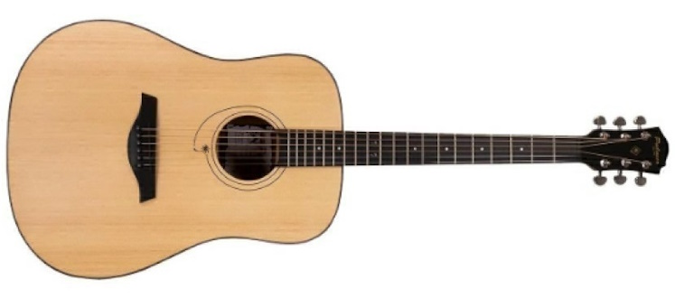
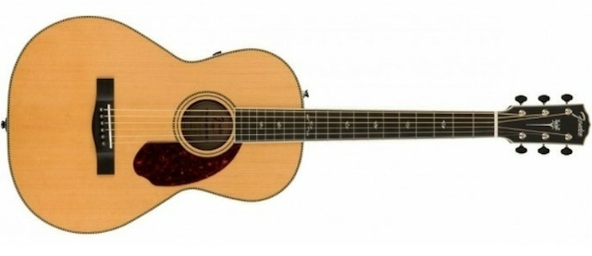

Guitarra acústica con cuerdas de acero con corte.
Guitarra acustica clasica de sonido folk co corte para alcanzar las notas mas altas con facilidad.

Guitarra acústica con cuerdas de acero sin corte.
Acústica con cuerdas de acero sin corte para los mas conservadores de la forma y resonancia.

Tambien llamada criolla o flamenca.
Modelo de guitarra clasica sin corte de sonido suave.
Acústica con cuerdas de nylon con corte.
Todas las bondades de una guitarra clásica con corte para facil alcance de las notas mas agudas del espectro.